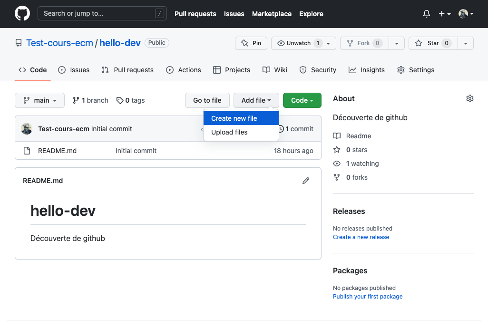
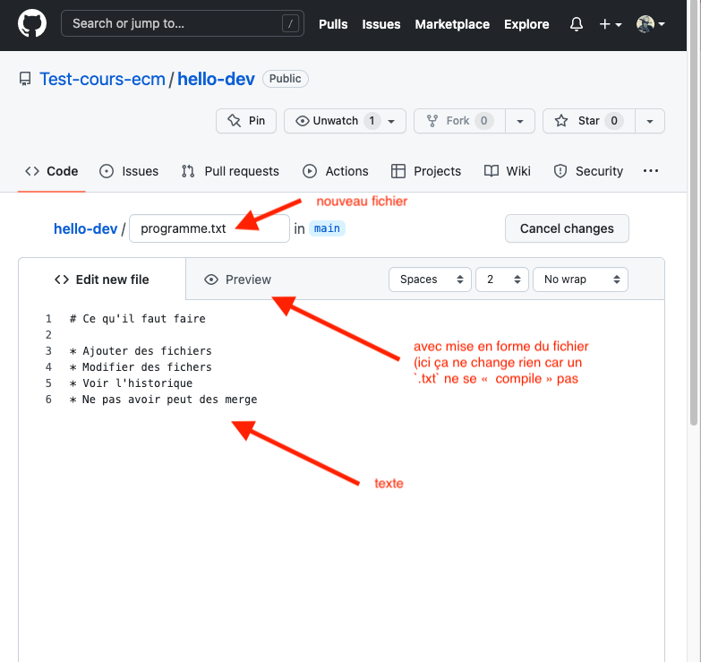
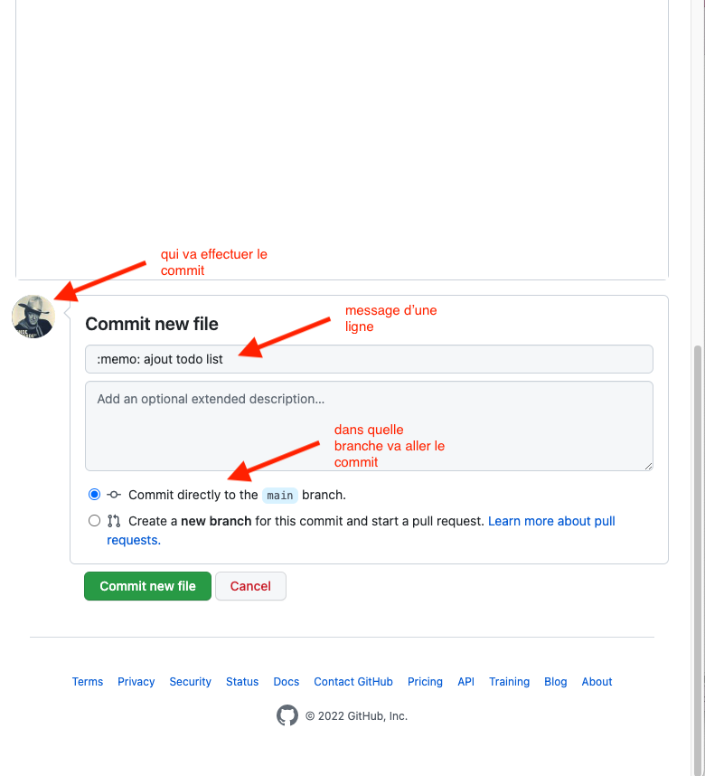
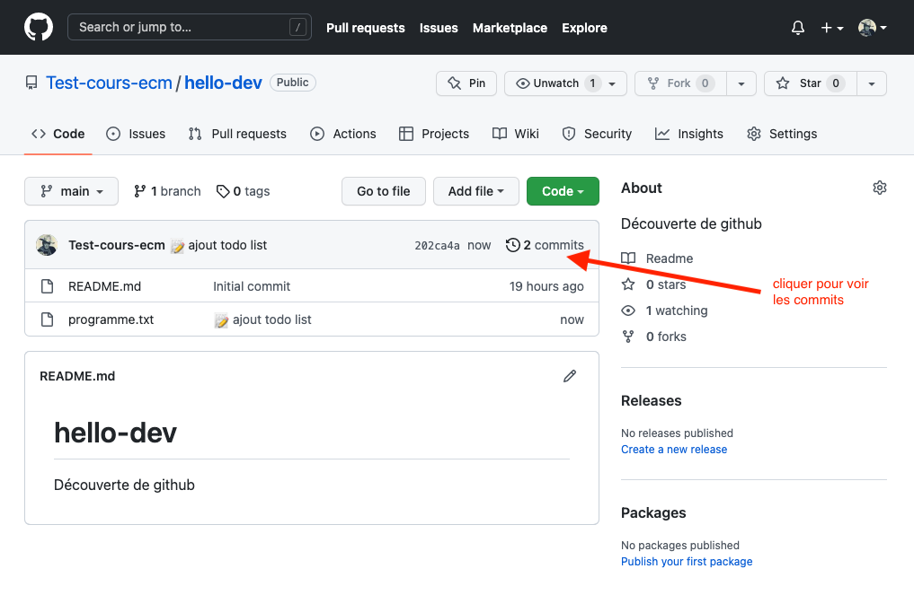
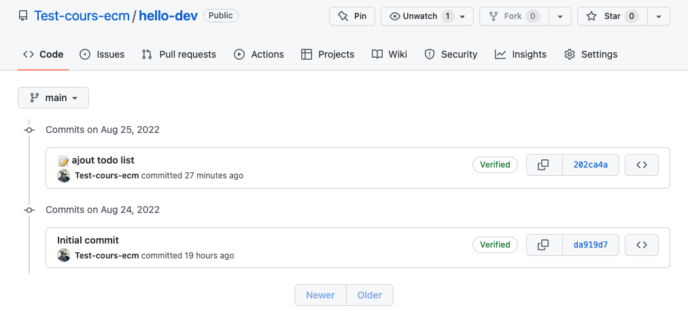

Projet github : création
Commencer par créer un nouveau projet en suivant si nécessaire les instructions du précédent projet :
Créez un nouveau projet sur le site de github que vous appellerez hello-dev.
Ajout de fichiers




On a utilisé https://gitmoji.dev/ pour le commit. Mettre un émoji en premier caractère du message permet de facilement identifier le but du commit.
Commits
On l'a déjà vu lors du précédent projet, ajouter des fichier et modifier du texte crée des commits, notre projet en a donc 2. En cliquant sur le texte "2 commits", on voit l'historique de notre projet sur la branche principale (main) :

En cliquant sur le numéro de commit, on voit le détail de celui-ci :

Nous rentrerons plus en détails dans ce que tout cela signifie un peut plus tard. Mais La façon dont est représenté le commit suit la syntaxe des GNU diffutils. Pour nous :
- on a modifié le fichier
programme.txt @@ -0,0 +1, 6 @@: on a supprimé aucune ligne et on a ajouté les lignes 1 à 6.- à droite on voit les lignes ajoutées en vert avec un
+devant elles